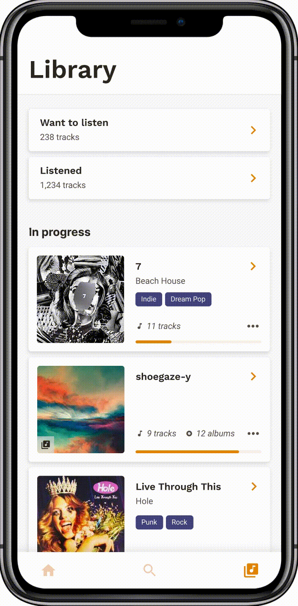
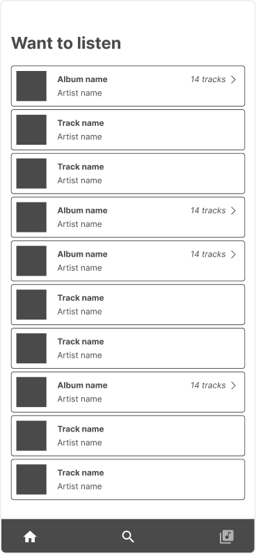
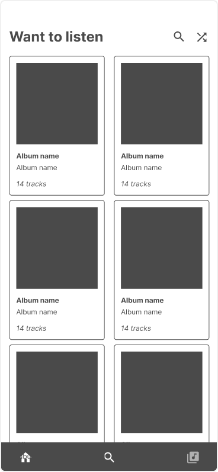
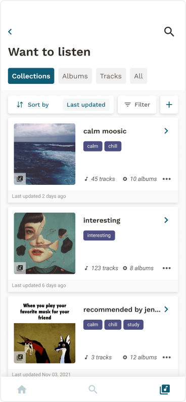
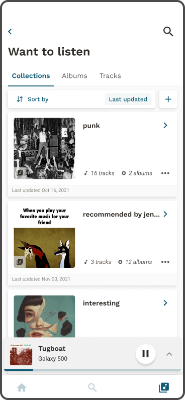
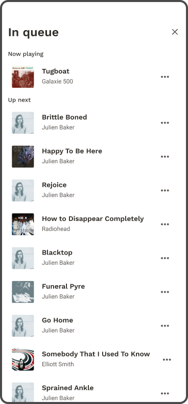
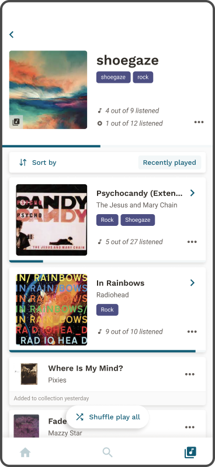
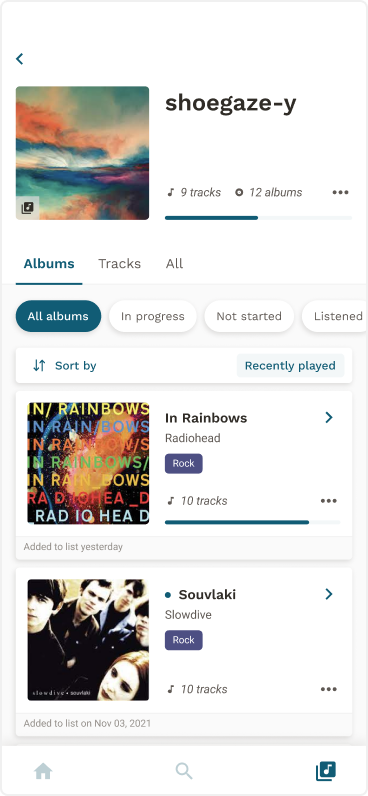

Oct - Nov 2021
I am always looking for new music to listen to. However, I found myself always forgetting the name of a track or album because I don’t know where to save the music upon finding it.
If you find something new that you're interested in, save the track into your 'Want to listen' catalog for later. Save the piece into a collection with other new music.

Search and filter directly from new music to disover saved music that fits the your mood or interested genres.

Motivate yourself to listen through the collections and albums in your 'Want to listen' catalog with help from a visual representation of your progress.

Validating the problem, understanding user motivations, behaviour, and pain points.
Identify areas of opportunity in the market.
Improve discoverability of music.

Feedback after concept testing v.1. prompted me to increase the card size of albums in v.2. Users often use album covers to decide what to listen to.

v.1.

v.2.
Provides a system for organizing music the user wants to listen to.
I made an assumption that tags would help users organize their collections. User feedback prompted me to remove tags in v.2 as they do not provide any additional information to the user.

v.1.

v.2.
Improves discoverability of music.
Helps users choose what music to play.
The queue was added in v.2. because feedback revealed users were unsure what order the tracks played in when they shuffled.

v.1.

v.2.
Helps users choose what music to play.
In v.2. tabs were used to organize music in progress, not started, and listened. This was unclear in v.1.

v.1.

v.2.

The following is how I would validate whether we have motivated users to finish listening to new music they have saved.
Are users creating collections and what type of collections are created?
Increased listening hours to new music.
Greater variety of genres and artists listened to.
This was something that I already knew was important but was something that I needed to experience first hand. I had originally planned to undergo user interviews after secondary research, but soon realized many of the insights I obtained from secondary research answered the majority of my research questions. So although user interviewers a part of initial my research protocol, they were no longer a priority.
This is something I would do differently next time because although I took an iterative approach, I didn’t take much time to explore different design options. For instance for feature one, is there more than one way users can organize music? If so, which is most beneficial to users? These are some things I’d like to explore in future iterations.
I’d like to consider how a broader audience of users would use this application. These features and this concept is very niche to a narrow audience users who listen to music in a certain way. I’d like to explore how other types of listeners could benefit from a product feature like this.
© Coded with luv by jennyfurhe